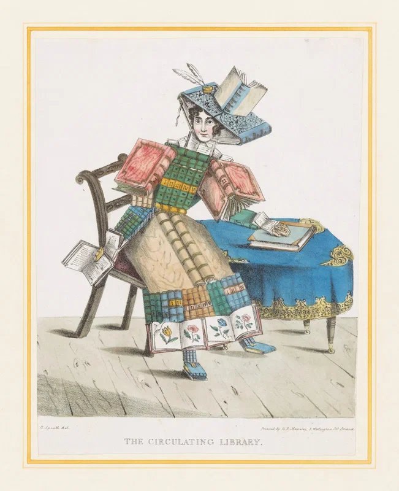

guided along, as it were, a chain of flowers into the mysteries of life.
Bookmarks

- /
- Playorama cranky video player for Playdate
- Playorama - Encode your videos for Playdate in the PDV format
- A list of text-only news sites
- Public Domain Image Search
- Member Calendar | The Center for Fiction
- About the Lab – Critical Media Lab
- Chogue
- cv-examples
- Home - Use & Modify
- xpubliverse
- https://networksofonesown.constantvzw.org/etherbox/manual.html
- Self-hosting for groups, notes an links
- murtaugh/vernacular - vernacular - XPUB GIt
- Paged.js — Made with paged.js
- What a Wirecutter Editor (and Tea Fanatic) Uses to Make Tea | Wirecutter
- beans72 Buckwheat Pillows sobakawa makura
- A Arduino RP2040 Standalone IoT Computer Running BASIC. : 17 Steps (with Pictures) - Instructables
- DIY WriterDecks | writerDeck
- Adult Learning Programs — Kolot Chayeinu
- Instruments | linseypollak.com
- wiki.comphost.club
- farphone
- Healthy Dinner Ideas When You’re Cooking on a Budget - NYT Cooking
- RSS How-To For Punks –
- The Counterforce Guide to Mastodon and The Fediverse (for punks!) –
- Geoff's Projects - BASIC Interpreter for the Raspberry Pi Pico
- Book Review: Seeing Like A State | Slate Star Codex
- ^Z
- How to Get Published: Author Guidelines for IEEE Computer Society Publications
- Haiku on Mac - Feedback / Hardware - Haiku Community
- Cauliflower Pasta Bake Recipe
- Violins Of Hope
- BASIC Programming
- LÖVE Cookbook | Introduction
- Games for Blind Gamers 5 - itch.io
- QB64 Tutorial
- Free Game Textbook
- Tutorial:Audio - LOVE
- A Simple Guide to Porting Your BASIC – The People's Permacomputer Project
- vi/vim tutorial for Dvorak
- The indie web index directory | theindex.fyi
- PhobosLab
- The Official Blueberry Soft Hypermedia Adventure Game Construction Engine Homepage
- Buckblog: Maze Generation: Recursive Division
- Submissions to NOISE JAM 2 - itch.io
- YENDOR by olifog, GreenMan891, kenL4
- GoBikeCamping - Find Bike-Friendly Campsites and Resources
- Memorel Restoration Project by DOMINO CLUB, communistsister
- communistsister - itch.io
- NOISEMAKERS - NOISE JAM community - itch.io
- Lost in the Signal: Radio as Instrument | Bandcamp Daily
- CRAIG STECYK III WORK SHOP AND ART SHOW – Juice Magazine
- GVSU Computing Club Game Jam
- godot tutorials - YouTube
- Chrysalis
- VHS Slipcover Maker - Alien
- texs.org
- HNSansAI
- 25 life-saving tips for Processing | Amnon P5 - Experiments with Processing by Amnon Owed
- EffectType - LOVE
- SVG Named Color Codes
- The Secret Lives of Games: All Systems Brough - VESPER.5
- RADIO IS A FOREIGN COUNTRY | SECRET STASH
- TRANSMISSION LOG | RIAFC
- sneakerweb
- Brooklyn Pirate Radio Sound Map
- Whoopee — Personal blog about Lua
- MisterDA/love-release at bash
- love-release/love-release.sh at bash · MisterDA/love-release
- New to Jazz, looking for albums like "Kind of Blue" : r/Jazz
- General math - LOVE
- Simplifier
- Neocities - Simplifier
- *Unai no tomo*: Catalogues of Japanese Toys (1891–1923) — The Public Domain Review
- ADU for You
- The "tinyweb" and an example low power web server
- Aphantasia Guide: Signs, Test & What To Do Next | Aphantasia Network
- Aphantasia Network - Understanding the Mind Without Mental Imagery | Aphantasia Network
- https://beyondloom.com/blog/artofchip8.html
- Guide to making a CHIP-8 emulator | Tvil
- Typothèque Esa le Septantecinq
- Every Noise at Once
- Music Thing Modular | Open source electronic musical instruments. Designed in London, made in Brighton, built and used by musicians around the world.